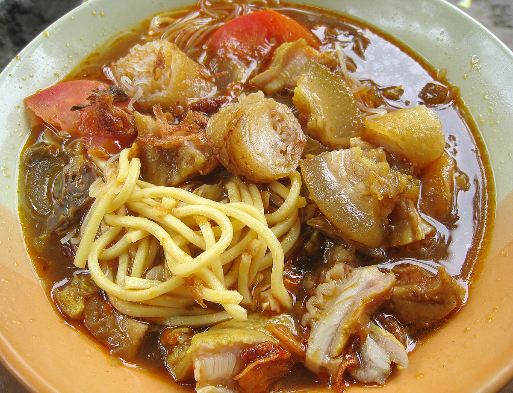

soto Mie Bogor

Soto Mie Bogor terkenal karena perbedaannya dengan masakan berkuah yang mengandung mie lainnya. Perpaduan mi dan bihun saja sudah membuatnya unik, belum lagi ketika ditambahkan daging sapi sengkel dan juga risoles yang renyah. Rasa kuahnya yang kaya datang dari Royco Kaldu Sapi. Berikan rasa legit padanya dari Bango Kecap Manis. Sajikan bersama emping, daun bawang, dan bawang merah goreng. Sungguh menyenangkan!
Cara membuat:
1. Rebus daging hingga empuk, angkat, lalu sisihkan.
2. Tumis bumbu halus dan masukkan daun salam, daun jeruk dan serai.
3. Campur tumisan bumbu ke dalam air rebusan daging, aduk. Tambahkan penyedap Kaldu Sapi, gula, merica, dan garam secukupnya.
4.
Rebus mie kuning dan bihun kemudian siapkan di dalam mangkuk. Siram dengan kuah daging selagi panas. Tata dengan potongan daging, kol, tomat, risoles, daun bawang, bawang goreng, serta taburan emping.
5.
Sajikan dengan Kecap Manis, sambal dan perasan jeruk nipis.